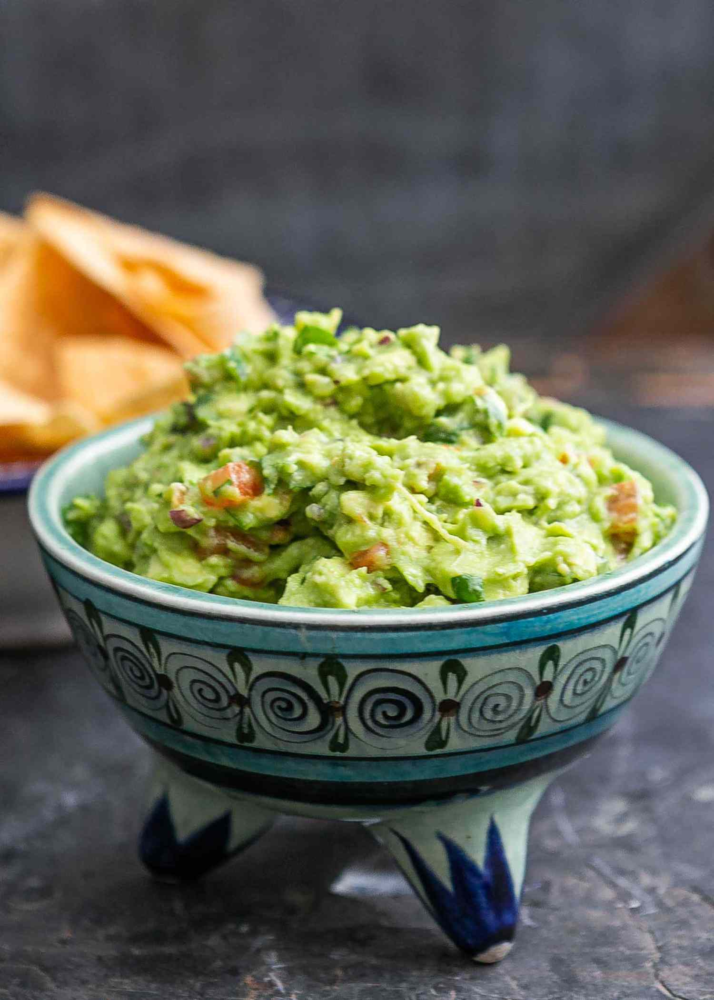

Guacamole

Description
This foolproof recipe is perfect for a snack with veggies or on top of grilled chicken or burgers. A low Carb staple!
Ingredients
- 2 (400 g) ripe avocados
- ½ (55 g) white onion, grated or finely chopped
- ½ lime, the juice
- 1 (110 g) tomato, diced
- 60 ml (4 g) fresh cilantro
- 1 garlic clove, minced
- salt and pepper, to taste
Instructions
- Peel the avocados and mash with a fork.
- Add the onion, lime juice, tomato, cilantro, and garlic.
- Season with salt and pepper, and mix until well combined.
Nutrients
| Carbs |
Protein |
Fat |
Calories |
Fibre |
Sugar |
Sodium |
Calcium |
Sat |
GL |
| (g) |
(g) |
(g) |
(kCal) |
(g) |
(g) |
(mg) |
(mg) |
Fat (g) |
|
| 2.28 |
1.67 |
9.65 |
115.93 |
5.05 |
1.39 |
106.50 |
10.52 |
1.38 |
0.39 |
Back to top of page